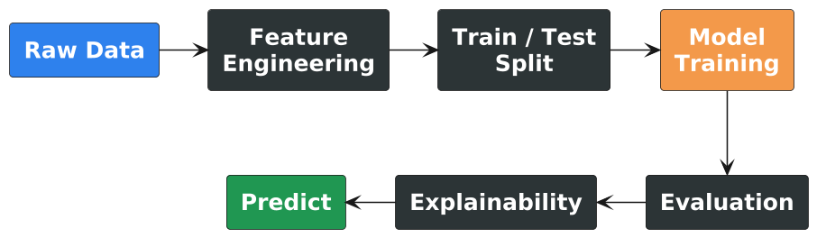
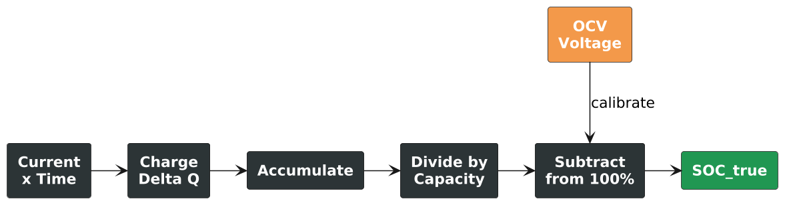

flowchart TD
S[Sensors] --> D[Data Stream]
D --> M[ML Models]
M --> A[Action]
A -->|feedback| S
style S fill:#2f80ed,color:#fff
style M fill:#f2994a,color:#fff
style A fill:#219653,color:#fff
Exploring Intelligent Technologies
Machine Learning for Intelligent Vehicles
Eric Julianto
IGNITE Batavia Team × Universitas Negeri Jakarta
Machine Learning for Intelligent Vehicles
IGNITE Batavia Team × Universitas Negeri Jakarta
Today is not about becoming ML experts — it’s about direct, first-hand experience with ML workflows.
Why Are Vehicles Becoming Intelligent?
- Roads are dynamic — unpredictable environment
- Energy is limited — battery must be managed
- Safety decisions are fast — milliseconds matter
- Sensors generate huge data — too much for manual rules
Intelligence is a practical engineering need — not a luxury feature.
Workshop Journey
Inside the Vehicle
⚡ Battery Sensors → 📊 SoC Estimation
Current, Voltage, Temperature → State of Charge
Outside the Vehicle
📷 Camera Image → 🎯 Object Detection
Pixels → Cars, People, Traffic Lights
Tip
Two different data types — one unified ML workflow.
What Is Machine Learning?
Traditional Programming
flowchart LR
R[Rules] --> P{Program}
D[Data] --> P
P --> A[Answer]
style R fill:#eb5757,color:#fff
You write the logic
→
Machine Learning
flowchart LR
D[Data] --> M{Model}
A[Examples] --> M
M --> P[Pattern]
style M fill:#2f80ed,color:#fff
style P fill:#219653,color:#fff
Model learns from examples
Tip
Instead of writing every battery rule manually, show the model examples of “sensor readings → known SoC” and let it learn.
The Four Words We Need
| Word | Simple Meaning | Vehicle Example |
|---|---|---|
| Feature | Input data the model reads | Current, Voltage, Temperature |
| Target | What we want to predict | State of Charge (0–100%) |
| Training | Learning from examples | Fresh battery data + known SoC |
| Prediction | Model output on new data | Estimated SoC from sensors |
Tip
Four words. That’s enough vocabulary for the entire workshop.
Supervised Learning — Intuition
Training Phase
| Current | Voltage | Temp | SoC? |
|---|---|---|---|
| 2.36 | 2.99 | 27.4 | 100% |
| −19.8 | 3.75 | 26.1 | 56% |
| 20.1 | 3.92 | 26.8 | 78% |
Model sees: sensors + answer → learns mapping
→
Prediction Phase
| Current | Voltage | Temp | SoC? |
|---|---|---|---|
| −4.3 | 3.68 | 26.5 | ?? |
| 15.7 | 4.05 | 27.1 | ?? |
Model sees: sensors only → estimates answer
Note
Like studying with answer keys, then taking the exam.
ML Workflow

Tip
Presentation = the why. Notebook = the how.
Part 1: Battery State of Charge
Can a vehicle estimate battery SoC from sensor data?
flowchart LR
S[⚡ Sensors] --> M[🤖 ML Model] --> G[📊 SoC Gauge]
style S fill:#f2994a,color:#fff
style M fill:#2f80ed,color:#fff
style G fill:#219653,color:#fff
Why SoC Matters
If SoC is Wrong
- ❌ Overestimate range → stranded
- ❌ Inefficient charging → wasted energy
- ❌ Battery degradation → shorter lifespan
- ❌ Poor energy decisions → safety risk
Important
5% SoC error on 300 km range = 15 km of uncertainty.
flowchart TD
SOC[Accurate SoC] --> R[✅ Reliable Range]
SOC --> E[✅ Efficient Charging]
SOC --> B[✅ Battery Safety]
SOC --> M[✅ Smart Energy Mgmt]
style SOC fill:#2f80ed,color:#fff
Our Sensor Data
| Column | Unit | Meaning | Range |
|---|---|---|---|
| Time | s | Elapsed time | 0 → 307,513 (~85h) |
| Current | A | Charging (+) / Discharging (−) | −20 to +33 |
| Voltage | V | Terminal voltage | 3.0 → 4.2 |
| Temperature | °C | Cell temperature | 25 → 28 |
Note
Fresh battery (358K rows) → training. Aged battery (307K rows) → testing.
Plus OCV-SOC lookup table (1001 points) for calibration.
Coulomb Counting — How We Get the Target
SOC(t) = SOC(0) - \frac{1}{C_{nom}} \int_{0}^{t} I(\tau) \, d\tau
- Measure current every second
- Current × time → charge (Ah)
- Subtract from full capacity
- Calibrate with OCV when current ≈ 0
Notebook: compute_soc() and compute_capacity()

Feature Engineering
From Raw Sensors to ML Features
| Feature | Source | Why It Helps |
|---|---|---|
| Current | Raw | Charge/discharge direction and rate |
| Voltage | Raw | Strong correlation with SoC (OCV curve) |
| Temperature | Raw | Affects battery behavior |
| cum_charge | Engineered | Cumulative history — model sees past, not just instant |
Note
cum_charge is computed by integrating current over time. The raw data didn’t have it — we created it.
Train / Test Split
Training
🪫 Fresh Battery Cell
358K rows — brand new behavior
Model learns the “ideal” mapping
→
Testing
🔋 Aged Battery Cell
307K rows — degraded behavior
Does the model generalize?
Important
A model trained on fresh cells may fail on aged cells. This is why testing matters.
Random Forest — How It Works
- Many decision trees vote together
- Each tree sees random subset of data & features
- Average of all trees → final prediction
Tip
Like asking 100 mechanics to estimate battery health, then averaging.
flowchart TD
D[Input Features] --> T1[Tree 1]
D --> T2[Tree 2]
D --> T3[...]
D --> T4[Tree N]
T1 --> V[Majority Vote]
T2 --> V
T3 --> V
T4 --> V
V --> P[SoC Prediction]
style D fill:#2f80ed,color:#fff
style V fill:#f2994a,color:#fff
style P fill:#219653,color:#fff
Random Forest — Why It Works
- Handles nonlinear Voltage-SoC relationship
- Robust to noisy sensor readings
- Easy to interpret (feature importance)
- Good baseline for tabular data
Notebook snippet
Training time: ~2 minutes | Results: MAE 0.10, RMSE 0.18, R² 0.42
XGBoost — How It Works
- Builds trees sequentially, not parallel
- Each new tree fixes previous trees’ mistakes
- Gradient boosting: minimize error step by step
Tip
Like a student who reviews wrong answers and focuses on those areas.
flowchart LR
M1[Model 1] -->|errors| M2[Model 2]
M2 -->|errors| M3[Model 3]
M3 -->|errors| MN[...]
MN -->|sum| P[Final Prediction]
style M1 fill:#eb5757,color:#fff
style M2 fill:#f2994a,color:#fff
style M3 fill:#f2c94c,color:#000
style P fill:#219653,color:#fff
XGBoost — Why It’s Stronger
- Gradient boosting — each step reduces remaining error
- Often beats Random Forest on tabular data
- Built-in regularization prevents overfitting
- Industry favorite for competitions
Notebook snippet
Training time: ~10 sec | Results: MAE 0.10, RMSE 0.17, R² 0.50
RF vs XGBoost
| Aspect | Random Forest | XGBoost |
|---|---|---|
| Tree building | Parallel (independent) | Sequential (fixes errors) |
| Training speed | ~2 min | ~10 sec |
| Overfitting risk | Low (averaging) | Moderate (needs tuning) |
| R² (accuracy) | 0.42 | 0.50 |
| Best for | Quick baselines | When accuracy matters |
Important
R² ≈ 0.5 means room for improvement — what other features could help?
How to Read the Results
| Metric | Meaning | Good Value | What It Tells You |
|---|---|---|---|
| MAE | Average absolute error | < 0.05 | “On average, how far off?” |
| RMSE | Penalizes large errors | < 0.10 | “How bad are the worst predictions?” |
| R² | Variance explained | > 0.8 | “What fraction did the model capture?” |
Tip
MAE = 0.10 → model is off by 10% SoC on average.
For 300 km range, that’s 30 km of uncertainty.
SHAP — How Models Explain Themselves
Asking: “What Were You Looking At?”
SHAP tells us which features pushed each prediction up or down.
flowchart LR
F1[Voltage: +0.3] --> P
F2[Current: −0.1] --> P
F3[Temperature: +0.02] --> P
P[Final Prediction = Base + Sum of SHAP]
style F1 fill:#2f80ed,color:#fff
style F2 fill:#eb5757,color:#fff
style F3 fill:#f2c94c,color:#000
style P fill:#219653,color:#fff
Notebook: shap.TreeExplainer(rf).shap_values() + summary_plot()
Why Model Interpretation Matters
| Question | Engineering Implication |
|---|---|
| Debugging | Is the model ignoring an important sensor? |
| Trust | Does it rely on physics (voltage) or noise? |
| Regulation | Can we explain decisions to auditors? |
| Feature selection | Which sensors can we remove to save cost? |
Important
In safety-critical systems, knowing why is as important as knowing the output.
Part 2: Object Detection
From Sensor Tables to Road Cameras
📊 Inside: Numbers in a Table
Current, Voltage, Temp → SoC
→
🖼️ Outside: Pixels in an Image
Camera feed → Objects in the scene
Note
Same ML principle. Different data structure.
Tabular ML reads columns. CV reads spatial patterns.
Why Computer Vision for Vehicles?
A vehicle must perceive its environment:
- 🚶 People — pedestrians, cyclists
- 🚗 Vehicles — cars, motorcycles, buses
- 🚦 Traffic elements — lights, signs
- 🛑 Obstacles — barriers, debris
flowchart TD
C[📷 Camera] --> D[Object Detection]
D --> F[🚶 Person]
D --> G[🚗 Car]
D --> H[🚦 Traffic Light]
F & G & H --> P[🧠 Planning]
P --> A[Decision: Slow down]
style C fill:#2f80ed,color:#fff
style P fill:#f2994a,color:#fff
style A fill:#219653,color:#fff
Three Computer Vision Tasks
| Task | Question | Output |
|---|---|---|
| Classification | “What is in the image?” | Single label: “car” |
| Object Detection | “What and where?” | Boxes + labels + confidence |
| Segmentation | “Which pixel belongs to what?” | Pixel-level masks |
flowchart LR
I[Input Image] --> C["Classification\nCar"]
I --> D["Detection\nCar at x,y,w,h"]
I --> S["Segmentation\nEvery pixel"]
style C fill:#2f80ed,color:#fff
style D fill:#219653,color:#fff
style S fill:#9b51e0,color:#fff
Object Detection Output
For Each Detected Object
| Field | Example | Meaning |
|---|---|---|
| Class name | car |
What the object is |
| Bounding box | (x1, y1, x2, y2) | Where in the image |
| Confidence | 0.85 | How sure (0 to 1) |
Important
Confidence ≠ accuracy. High confidence doesn’t guarantee correctness — always inspect results.
Meet YOLOv8
You Only Look Once
- Single pass — one forward pass for all objects
- Real-time — fast enough for video
- Pretrained — 80 COCO classes out of the box
- YOLOv8n — nano version, ideal for workshops
Note
Today: inference only. Training from scratch takes days on server GPUs.
| Variant | Size | Speed | Use Case |
|---|---|---|---|
| YOLOv8n | Nano | Fastest | Edge devices |
| YOLOv8s | Small | Fast | Lightweight apps |
| YOLOv8m | Medium | Balanced | General purpose |
| YOLOv8x | X-Large | Slowest | Max accuracy |
Why Pretrained Models?
✅ Advantages
- Ready to use immediately
- Trained on millions of images
- No GPU training needed
- Good for demos & prototypes
⚠️ Limitations
- May miss specialized objects
- Trained on general scenes
- Accuracy depends on domain similarity
flowchart TD
subgraph PT["Pretraining (YOLO team)"]
A[COCO Dataset\n330K images] --> B[Train YOLO\nserver GPUs]
B --> C[yolov8n.pt]
end
subgraph INF["Inference (Workshop)"]
D[Road Image] --> C
C --> E[Detections]
end
style PT fill:#1a1a2e,color:#fff
style INF fill:#2d3436,color:#fff
style C fill:#f2994a,color:#fff
YOLO Practical Pipeline
flowchart LR
S1[1. Install] --> S2[2. Import]
S2 --> S3[3. Download image]
S3 --> S4[4. Load model]
S4 --> S5[5. Run inference]
S5 --> S6[6. Visualize boxes]
S6 --> S7[7. Table output]
S7 --> S8[8. Filter objects]
S8 --> S9[9. Count]
style S5 fill:#f2994a,color:#fff
style S6 fill:#2f80ed,color:#fff
style S9 fill:#219653,color:#fff
Tip
Notebook: yolo_object_detection_workshop.ipynb — each step is a separate cell.
Objects We Care About
Road-Relevant Classes
| Class | Relevance |
|---|---|
| 🚶 Person | Safety-critical |
| 🚗 Car | Most common |
| 🏍️ Motorcycle | Common in Indonesia |
| 🚌 Bus | Different behavior |
| 🚛 Truck | Long braking |
| 🚦 Traffic Light | Signal compliance |
From Detection to Decision
YOLO detects objects — but who makes the decision?
Detection Output
🚶 person × 3 (conf: 0.9)
🚗 car × 2 (conf: 0.85)
🚦 light × 1 (conf: 0.78)→
Possible Decisions
- 🛑 Person ahead → reduce speed
- 🚗 Cars nearby → keep distance
- 🚦 Red light → prepare to stop
Important
YOLO provides perception, not driving. A separate planning module makes decisions.
Practical Challenges
What to Try After the Walkthrough
Part 1: Battery SoC
- Complete the Linear Regression challenge
- Experiment with Genetic Algorithm (cell 44-47)
- Change hyperparameters manually
- Discuss: why is R² below 0.5?
Part 2: YOLOv8
- Upload your own road image
- Adjust confidence threshold (0.10 vs 0.60)
- Count only vehicle classes
- Compare crowded vs empty road
Intelligent Vehicle System
flowchart TD
subgraph S["🔌 Sensors"]
BMS[Battery\nCurrent, Voltage, Temp]
CAM[Camera\nRoad Scene]
end
subgraph P["🔍 ML Perception"]
SOC[SoC Estimator]
DET[Object Detector]
end
subgraph D["🧠 Decision"]
ENERGY[Energy Manager]
SAFETY[Safety Monitor]
end
BMS --> SOC --> ENERGY
CAM --> DET --> SAFETY
style S fill:#1a1a2e,color:#fff
style P fill:#2d3436,color:#fff
style D fill:#1a1a2e,color:#fff
SoC estimation and object detection are two perception blocks in a larger intelligence system.
Closing Reflection
Three Questions
1. What data can I collect?
2. What should the model predict?
3. What decision will use it?
flowchart TD
Q1[What data?] --> Q2[What to predict?]
Q2 --> Q3[What decision?]
Q3 --> S[A useful system]
style Q1 fill:#2f80ed,color:#fff
style Q2 fill:#f2994a,color:#fff
style Q3 fill:#219653,color:#fff
style S fill:#9b51e0,color:#fff
Tip
A useful ML project starts from a real decision, not a model name.
References
Q&A
Thank you for listening
IGNITE Batavia Team × Universitas Negeri Jakarta
Exploring the Potential of Intelligent Technologies

IGNITE Workshop